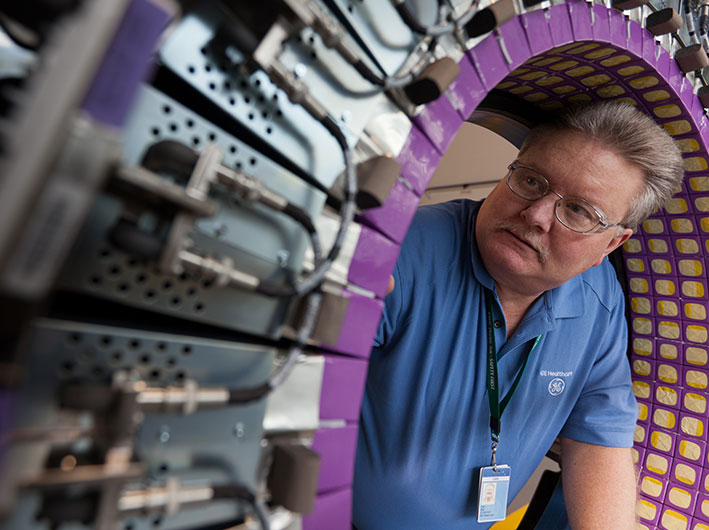

The Power to Help
We will achieve more commercial intensity. I met with the commercial council last week and we are...
MoreWe will achieve more commercial intensity. I met with the commercial council last week and we are half way through session C. My observation: Let's err on the side of more feet on the street and less sales administration; as a company, we still don't understand marketing. Marketing is about demand creation. And, the businesses that have tough markets need more marketing, not less. Sometimes I feel like we have hundreds of people in the company to tell us that the weather is bad and Europe is slow. We can read the paper. What we need are teams that prowl for opportunity... that is marketing.

Simplification equals winning in the market.
The Commercial Council is leading this mandate and I asked the commercial leaders to share their thoughts on how they are leaning in to win, grab share, deliver for our customers and eliminate, or minimize, many of our commercial processes to improve efficiency for our teams and our customers.
We all agree commercial intensity requires having more empowerment in the field and accountable commercial functions that support our ability to deliver outcomes. We must be hungry to win. This requires less bureaucracy and a heavy dose of trust among our teams.
Overall, the commercial teams must own the customer relationship, the sale, taking calculated risks, being accountable, operating with a sense of urgency, intensity and edge and being a lean, value added team that moves at market speed.
We're making progress but we have lots more to do. To help focus our efforts, we have defined the key areas where we are committed to driving change, focus and meaningful outcomes.
We will achieve more commercial intensity. I met with the commercial council last week and we are half way through session C. My observation: Let's err on the side of more feet on the street and less sales administration; as a company, we still don't understand marketing. Marketing is about demand creation. And, the businesses that have tough markets need more marketing, not less. Sometimes I feel like we have hundreds of people in the company to tell us that the weather is bad and Europe is slow. We can read the paper. What we need are teams that prowl for opportunity... that is marketing.
The Commercial Council is leading this mandate and I asked the commercial leaders to share their thoughts on how they are leaning in to win, grab share, deliver for our customers and eliminate, or minimize, many of our commercial processes to improve efficiency for our teams and our customers.
Simplification equals winning in the market.
John Lavelle, President and CEO, GE Digital Energy
Tough markets need more marketing, not less. Sometimes I feel like we have hundreds of people in the company to tell us that the weather is bad and Europe is slow. We can read the paper. What we need are teams that prowl for opportunity... that is marketing.
The Commercial Council is leading this mandate and I asked the commercial leaders to share their thoughts on how they are leaning in to win, grab share, deliver for our customers and eliminate, or minimize, many of our commercial processes to improve efficiency for our teams and our customers.
Overall, the commercial teams must own the customer relationship, the sale, taking calculated risks, being accountable, operating with a sense of urgency, intensity and edge and being a lean, value added team that moves at market speed.
In the end, our success begins in the marketplace. The metrics are visible. The teams that are winning in the market create job security. Therefore, we all should support commercial intensity. I look forward to your thoughts.
Comments
Joshua Smith | March 18, 2014 at 11:32 am
Jeff,
I love this line, "Sometimes I feel like we have hundreds of people in the company to tell us that the weather is bad and Europe is slow. We can read the paper." It makes me realize that we have become much more isolated than we used to be. In Healthcare IT we rarely get to meet with upper management or hear from them very often on the vision and direction of the company.
We have to have this interaction to thrive. We see this all the time in nature. Life happens on the edge. If you ever sit and observe the edge of a forest you will be blown away by the diversity of interacting species, especially birds. They come to feed at the edge, interact at the edge and then they go back to their various habitats.
I'd like to see more edges created in our businesses where management can interact with various levels of their particular organization. This will create a diversity of thoughts and ideas, provide leadership with a deeper sense of where the strengths and weaknesses are and will promote a team atmosphere with management and their teams.
Thanks and great article!
ReplyPierre Marty | March 19, 2014 at 9:43 am
I think we need to listen far more to our front line (sales) when it comes to NPI (hence Product Marketing from the begining). Chris Zook VP Bain & Comany and BestSeller business book writter reported, having analysed many companies, that what differentiate leading companies to other is the ability to listen to the front line and develop the process, products and strategies according to the front line VOC.
Maggie Capettini | March 19, 2014 at 6:32 pm
Having a high cost structure not only reduces margins but makes the company more vulnerable to disruptive innovation which usually comes from lower cost-structured companies.
László Takáts | March 18, 2014 at 10:36 am
Agree that more feet on the street, empowerment and accountability coupled with rewards for actions are key. The companies that are doing it really well are some of the MLM companies: not trying to compare them to GE as they're much smaller in size, yet they grow double digit even in tough regions and in tough times (eg. FLP 13% in Europe in 2013). The best ones have a simple marketing plan with a clear reward scheme that increases exponentially – a clear and simple metric for both the company and the employees.
ReplyThierry Maeder | March 18, 2014 at 10:26 am
While I am in complete agreement with the basic message, I feel uneasy when reading about "aggressive" business practices. This unconsciously brings images of someone hitting someone else on the head, violence, etc. which is not exactly in line with our ideal of compliance. Maybe terms like "vigor" and "vigorous" might be more appropriate?
Reply